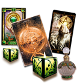

Человек стал холодным, отдалился и перестал говорить прямо.

конфиденциально
онлайн, по фото и в удобном для вас формате
Таро, гадания, привороты
София Павловна
Смотрю любовь, отношения, возврат, защиту и ближайшее будущее.
Провожу глубокий анализ ситуации и ищу скрытые причины происходящего. Работаю по фото: диагностирую чувства, выявляю и снимаю чужое влияние, привороты, отвороты, порчу, заговоры. Если проблема не даёт покоя и вы зашли в тупик — пишите. Посмотрю вашу ситуацию и прямо скажу, с чего начать решение.
Когда стоит написать мне
Если внутри уже нет спокойствия, сначала нужно увидеть, что происходит на самом деле.
Ко мне обращаются, когда человек молчит, отношения рушатся, семья трещит, есть подозрение на чужое влияние или нужно понять, что будет дальше.
Отношения идут к разрыву, а ссоры повторяются снова и снова.
Нужно понять, можно ли вернуть любимого человека.
Семья рушится, накопились обиды, холод и недоверие.
Есть ощущение порчи, зависти, соперницы или чужого влияния.
Нужен ответ по будущему, удаче, дороге или важному шагу.
Что я помогаю увидеть
Я смотрю не только событие, но и скрытую причину, которая стоит за ним.
Смотрю чувства, намерения, страхи и то, что он не говорит напрямую.
Разбираю обиды, усталость, влияние других людей и скрытые причины холода.
Показываю, можно ли восстановить связь и какой шаг сейчас уместен.
Проверяю, есть ли третьи лица и насколько сильно они вмешиваются.
Смотрю тяжёлый фон, зависть, повторяющиеся срывы и чужое воздействие.
Подсказываю, начинать ли с расклада, защиты, работы по фото или любовной темы.
Чем я могу помочь
Основные направления моей работы
Гадание и Таро
Смотрю чувства, отношения, ближайшие события, скрытые причины и возможное развитие ситуации.
Отношения и чувства
Разбираю, что человек чувствует, почему отдалился, что скрывает и есть ли будущее у связи.
Приворот, отворот и заговоры
Работаю с любовной магией, охлаждением, чужим влиянием, притяжением и восстановлением связи.

Возврат любимого человека
Смотрю причины разрыва, обиды, молчание и возможность вернуть мужа, жену или любимого человека.
Воссоединение семьи
Разбираю семейные конфликты, холод, вмешательство третьих лиц и шанс восстановить доверие.
Порча, сглаз и негатив
Диагностирую зависть, сглаз, тяжёлые повторяющиеся ситуации и чужое воздействие.
Защита и очищение
Ставлю защиту, смотрю, что нужно снять, и помогаю закрыть ситуацию от повторного влияния.
Будущее, удача и работа по фото
Смотрю будущее, дороги, перемены, денежную удачу и ситуацию по фотографии.
Как проходит обращение
Вы пишете мне, а я по шагам смотрю ситуацию и объясняю, с чего начать.
Вы пишете мне о своей ситуации
Вы коротко описываете, что произошло и какой вопрос сейчас болит сильнее всего.
Я уточняю детали и смотрю ситуацию
Разбираю чувства, причины, скрытые влияния, семью, будущее и ближайшие развилки ситуации.
Я объясняю, что видно
Показываю картину и подсказываю, с чего лучше начать: расклад, защита, работа по фото или другой формат.

Обо мне
Давайте знакомиться, я — София Павловна.
Моя специализация — Таро, работа по фото, любовная магия и энергетическая защита.
Чаще всего ко мне приходят в моменты сомнений. Когда нужно точно понять: что на самом деле происходит в отношениях? Почему близкий человек охладел? Нет ли на вас чужого влияния — приворота, отворота или порчи? Можно ли вернуть любовь и как это сделать без вреда?
Я не просто предсказываю будущее. Я делаю детальный разбор вашей ситуации, убираю любой магический негатив и даю четкое понимание того, как действовать дальше.
Видео и эфиры
Я эксперт, которому доверяют редакции радио «Лемма» и канала «Волга».
Меня регулярно приглашают в эфиры поговорить об отношениях, кризисах и прогнозах, потому что зритель чувствует: я не читаю лекцию, а говорю с ним на равных.
Эфиры о чувствах, кризисах и прогнозах
В таких съёмках я говорю простым языком о том, что волнует людей в отношениях, семье и личном выборе.


Фотогалерея
За кадром моей работы


Сертификаты
Подтверждение обучения и дополнительной практики.
Отзывы о работе
Что мне пишут после консультации и разбора ситуации
Результаты индивидуальны и могут отличаться в каждом конкретном случае.
Я хотела понять, что он чувствует и почему стал молчать. После расклада стало видно, где мои страхи, а где реальная причина.
Чувства человекаПосле разрыва я не знала, стоит ли писать первой. Разбор помог увидеть шанс на возврат и не сделать лишнего шага.
Возврат после разрываВ семье всё держалось на ссорах. Я получила спокойное объяснение, почему конфликт повторяется и что мешает примирению.
Семейные ссорыОбратилась из-за ощущения порчи и тяжести. Мне объяснили, что видно по ситуации и какая защита нужна.
Порча и защитаПосле разбора стало спокойнее: я наконец поняла, почему человек отдалился и что не стоит делать сейчас.
Стало спокойнееМне нужен был конкретный ответ по будущему. После просмотра стало понятно, какой шаг выбрать и чего не торопить.
Следующий шагFAQ
Вопросы, которые мне чаще всего задают перед обращением
Если я не понимаю, какой формат работы нужен?
Напишите мне своими словами. Я сначала посмотрю ситуацию и скажу, с чего лучше начать: расклад, диагностика, защита или другой формат.
Всё ли остаётся конфиденциально?
Да. Я работаю лично, без передачи ваших фото, переписки и деталей обращения третьим людям.
Есть ли гарантия результата?
Я честно говорю, что вижу по ситуации, и не обещаю того, что не подтверждается просмотром.
Связь со мной
Если ситуация не даёт покоя, напишите мне в WhatsApp.
Я посмотрю, что происходит, и подскажу, с чего начать.